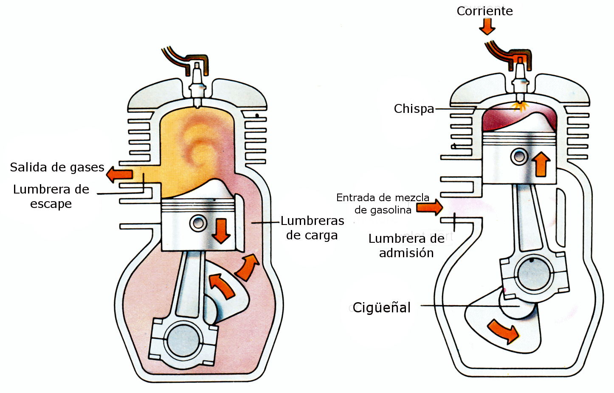

¿Sabías que las motos de dos tiempos tienen una mecánica diferente?
Uno de los detalles más interesantes de muchas versiones clásicas de la Yamaha DT125 es que utilizan un motor de dos tiempos, una tecnología que se diferencia bastante de los motores de cuatro tiempos que encontramos en muchas motocicletas modernas. En un motor de dos tiempos, el ciclo de funcionamiento se completa en una sola vuelta del cigüeñal, es decir, en dos movimientos del pistón. En cambio, un motor de cuatro tiempos necesita dos vueltas del cigüeñal para completar su ciclo.
Esta diferencia permite que un motor de dos tiempos tenga una construcción relativamente sencilla y pueda ofrecer una buena relación entre potencia y peso. Por eso fue una opción popular en motocicletas todoterreno y deportivas de pequeña cilindrada. Otra característica interesante es su sistema de lubricación. En muchas versiones clásicas de la DT125, el aceite destinado a lubricar el motor se suministra mediante un sistema de inyección de aceite o se mezcla con el combustible, según el modelo. Esto significa que el mantenimiento y el tipo de lubricante son especialmente importantes.
Además, el sonido y la respuesta del motor de dos tiempos son diferentes de los de un motor de cuatro tiempos, algo que muchos aficionados consideran parte del carácter de estas motocicletas.
¿Qué hace especial a este motor?
- Construcción sencilla: tiene un mecanismo más simple que el de un motor convencional de cuatro tiempos.
- Buena relación potencia-peso: ofrece un rendimiento interesante para su cilindrada.
- Sonido característico: tiene una respuesta y un sonido que muchos aficionados reconocen.
- Mantenimiento específico: requiere atención a la lubricación, la carburación y el escape.